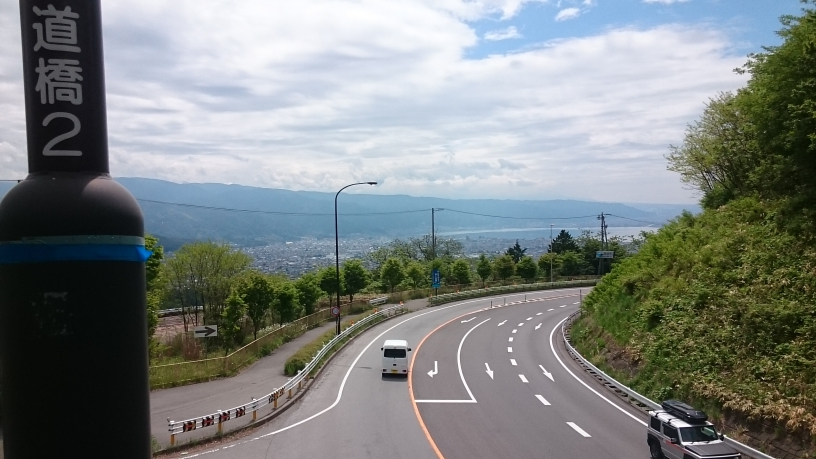

諏訪湖サイクリングページ
サイクリングの経緯について

- ↑松本-諏訪-辰野-松本の経路
今回は，長野県に来て，初めての同級生の友達と一緒にサイクリングに出かけることとなった。彼はもとからの長野県民であるものの，やはり長野は広いらしく，南信の方まではあまり行けていないようであった。また，彼とはたまたまいろいろな趣味が合い，仲良くなったのだが，なんと自転車でのサイクリングにも興味があるとのことであったので，もともと彼が運動部のトレーニングの際使用していたというロードバイクに乗った彼と共に，諏訪観光を手始めに行うこととなった。今回諏訪を選んだのは，松本から比較的手軽に行くことができることと，以前僕がサイクリングで，たまたま通ったところであったことが決めてとなったのだが，個人的にも，ほとんど諏訪を見て回ることができなかったので，大変楽しみなのであった。
5/23 【116km】 松本→塩尻→諏訪→岡谷→辰野→塩尻→松本
松本→岡谷
- 
- ↑塩尻峠の頂上 岡谷よりなため，諏訪湖が良く見える
今回も，時刻8:30くらいに家を出ることにした。さすがに初サイクリング同伴であったため，ゆっくりと塩尻まで漕ぎ，1時間20分ほどで塩尻峠の入口が見えてきた。前回の塩尻峠は終盤に，岡谷側から上ったため，急な勾配で，上り切ってしまえばあとは塩尻に向かった長い下りを下るだけだったのだが，今回は塩尻側から上っていくことになるため，ただひたすら，多少急な坂を上り続けた。しかし，塩尻峠はあくまで初級なので，ゆっくりと上っていけば1時間くらいでなんなく突破することができて，少々お互い疲れたものの，10:00頃の岡谷，諏訪，諏訪湖を見渡すことができた。それが，この写真である。
岡谷→諏訪→立石公園
- ↑岡谷駅の連絡橋から見えた旧国鉄電車
岡谷駅に着き休憩することとなったのだが，連絡橋を見てみると，なかなか珍しい電車が止まっていた。実は彼も電車好き(僕より詳しい)であったため，早速写真を撮り，本日の思ってもいない収穫に歓喜した。それからは，諏訪湖の周りをぐるりとまわりながら，諏訪湖を観察し，前回と動揺に下諏訪で諏訪大社 春宮によったり，昼飯を撮ったりした。以降は，国道20号も軽油しながら，諏訪を目指し，何をしようか迷ったが，立石公園に行くことになり，諏訪からの急勾配を駆け上がり，立石公園まで行ったのである。
立石公園→岡谷→辰野→塩尻
- ↑立石公園1

- ↑立石公園2
立石公園からは，塩尻峠からの景色とは，また違ったアングルから諏訪湖やその周辺を一望することができた。また，立石公園は，映画「君の名は」の聖地としても有名であり，一度はこのような場所からの諏訪湖というのを眺めてみたかったが，苦労のかいがあるほどの景色であった。帰りは，高島城跡に寄って，そのまま下諏訪を軽油せず，岡谷まで戻った。そこから再び塩尻峠を上っても良かったのだが，時間的に15:00程度であり，余裕があると思ったため，あえて旧中央線が通る辰野を軽油して帰ることとした。
辰野までのルートは，基本的に下るだけで済んだのだが，道は県道の一本道が主なルートであり，道幅は狭く，隣を通る車に注意しながら進むこととなった。途中，蛍で有名なところがあったらしいのだが，時間の都合上通過し，先を急ぐこととなった。帰り道は，そこそこの上り坂で，国道153号をひたすら単調に行くこととなった。
塩尻→松本
本当は，塩尻に入るあたりにあった，みどり湖にも寄ってみたかったが，時間の都合上あきらめることとし，そんなこんなで塩尻についた。塩尻には松屋があるのだが，そこで晩飯を食べ，家に着いたのが，またしても21時代のギリギリであった。
以上が，長野に来ての友達との初のサイクリングとなった。そして，次回以降もよく一緒に行くパートナーとなったのである。